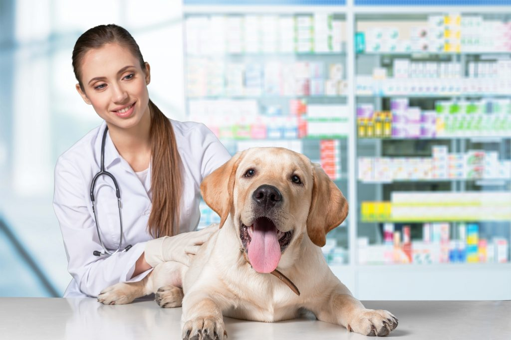
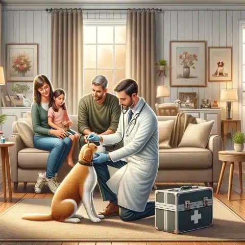
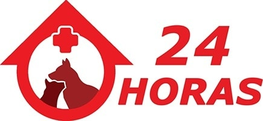
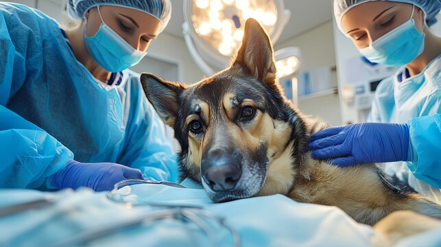
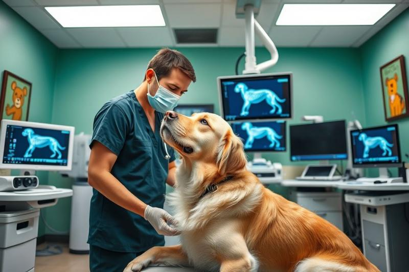
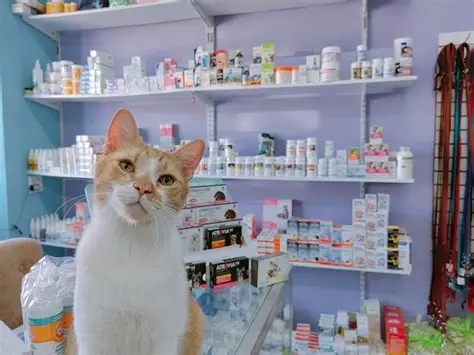
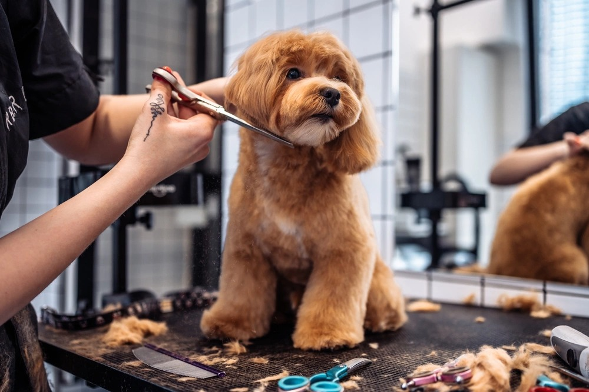
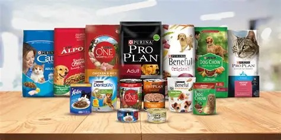

Cuidado profesional para tus mascotas
Atención total las 24 horas para tus mascotas
Todo comenzó hace más de 10 años, cuando el Dr. Daniel (conocido por sus amigos como "el señor bigotes") rescató a un pequeño perro callejero. Esa conexión especial lo inspiró a crear un espacio donde la salud y el amor por los animales fueron creciendo cada dia más con la mision de salvar a todos los animales.
Lo que empezó como una pequeña consulta de barrio, hoy es la Clínica Veterinaria Dr. Bigotes, un centro integral equipado con la mejor tecnología y mucho amor a los animales.
Proteger el bienestar de tus mascotas a través de medicina preventiva y atención de alta calidad.

Revisiones generales y diagnósticos preventivos para mantener la salud de tu mascota al día.

Atención profesional en la comodidad de tu hogar para evitar el estrés del traslado.

Disponibilidad inmediata para atender cualquier accidente o complicación en cualquier momento.

Intervenciones quirúrgicas realizadas con equipos modernos y bajo estrictos protocolos de seguridad.

Diagnóstico por imagen avanzado para detectar problemas óseos o internos con precisión.

Venta de medicamentos especializados y suplementos vitamínicos certificados.
Servicio de recreación y ejercicio controlado para mejorar el bienestar físico de tu mascota.

Cuidado estético integral que incluye baño, corte de pelo y limpieza profunda.

Variedad de alimentos premium seleccionados para cubrir las necesidades nutricionales específicas.
Ubicación: Av. Libertad #748, oficina 57
Teléfono: 32 2 872309
Celular: +56 9 7612 0954
Correo: clinica_dr_bigotes@correo.cl